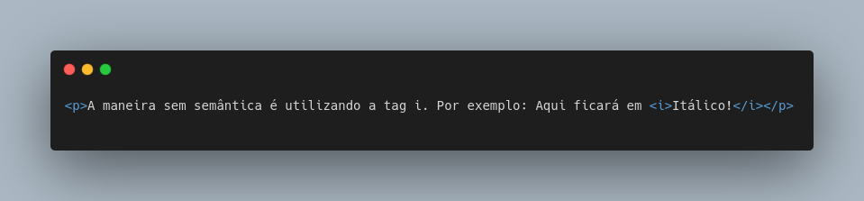
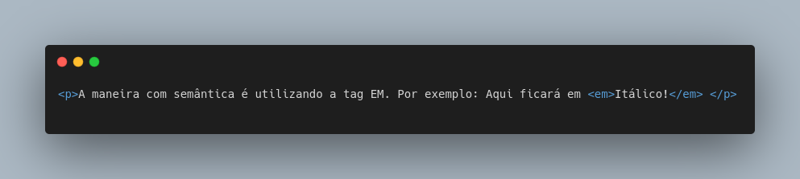
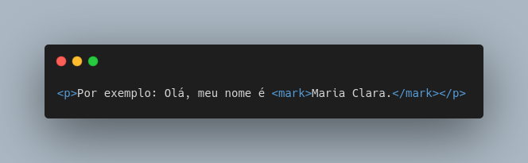
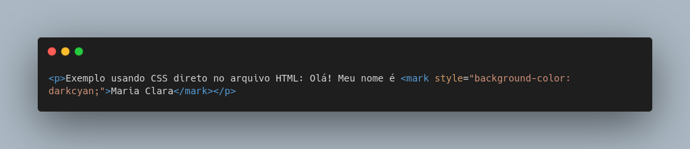
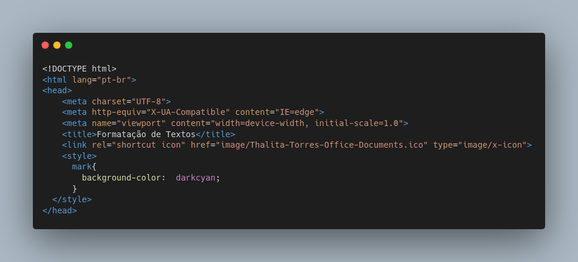
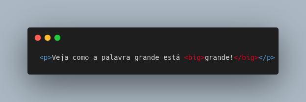
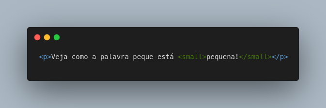
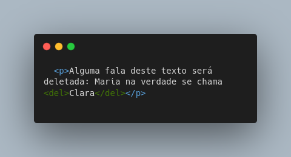
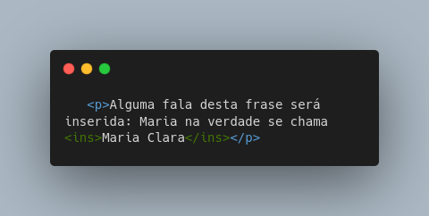
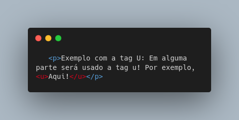

Há duas formas de representarmos algo em negrito: com semântica e sem semântica. Logo abaixo será demonstrado essas duas formas:
A maneira sem semântica é utilizando a tag b! Por exemplo: Aqui ficará em Negrito!
Dizemos que a tag b é sem semântica pois ela não possui um significado, ela apenas possui e da uma forma, que neste caso, é negrito!
Dê uma espiadinha no código: 👀
A maneira com semântica é utilizada com a tag strong! Por exemplo: Aqui ficará em Negrito!
Dizemos que a tag strong é com semântica pois ela possui significado e forma. Strong vem de "forte". Dá um sentido a sua usabilidade.
Dê uma espiadinha no código: 👀
.png)
Assim como em negrito, há duas formas de representarmos algo em itálico: com semântica e sem semântica. Logo abaixo será demonstrado essas duas formas:
A maneira sem semântica é utilizando a tag i. Por exemplo: Aqui ficará em Itálico!
Dizemos que a tag i é sem semântica pois ela possui apenas forma e não significado.
Dê uma olhadinha no código: 👀
A maneira com semântica é utilizando a tag EM. Por exemplo: Aqui ficará em Itálico!
Dizemos que a tag EM é semântica pois ela possui forma e significado! Significado pois EM vem de Emphasis que é Ênfase.
Dê uma olhadinha no código: 👀
Podemos criar também um texto marcado com a tag MARK.
Por exemplo: Olá, meu nome é Maria Clara.
Se quisermos mudar a cor da marcação, fazemos isso com CSS.
Exemplo usando CSS direto no arquivo HTML: Olá! Meu nome é Maria Clara
No exemplo acima estamos usando CSS no documento HTML. Nesse exemplo, o que está sendo marcado mudará para a cor que escolhemos. Podemos adicionar o style do CSS dentro da tag HEAD deste documento, onde iremos dizer que todas as tags MARK ficarão com a cor que determinarmos lá em cima. Exemplo de como o código irá ficar logo abaixo.
Dê uma olhadinha no código - Usando a tag MARK: 👀
Dê uma olhadinha no código - Mudando cor: 👀
Dê uma olhadinha no código - Usando tag style dentro do HEAD: 👀
Para podermos fazer um texto grande usamos a tag big, da qual, está obsoleta, porém, seu uso ainda é válido e ela ainda funciona.
Veja como a palavra grande está grande!
Agora, para fazermos um texto pequeno usamos a tag small, na qual, não está obsoleta.
Veja como a palavra pequena está pequena!
Dê uma olhadinha no código - Usando a tag big: 👀
Dê uma olhadinha no código - Usando a tag small: 👀
Podemos fazer com que um texto ou uma palavra seja "deletada", ou seja, tenha aquele risco em cima dela.
Para isso usamos a tag del!
Alguma fala deste texto será deletada: Maria na verdade se chama Clara
Dê uma olhadinha no código - Usando a tag del: 👀
Podemos fazer com que um texto ou uma palavra seja "inserida" ou seja, fique com aquele risco em baixo dela.
Para isso usamos a tag ins!
Alguma fala desta frase será inserida: Maria na verdade se chama Maria Clara
Dê uma olhadinha no código - Usando a tag ins: 👀
Observação: Existe outra forma de fazer o texto sublinhado, onde ao invés de usarmos a tag ins, usamos a tag sem semântica u! Essa tag é comumente vista em programas de editores de texto. Mas ficar atento e usar a tag certa e com semântica, a tag ins!
Exemplo com a tag U: Em alguma parte será usado a tag u! Por exemplo, Aqui!
Dê uma olhadinha no código - Usando a tag u: 👀
